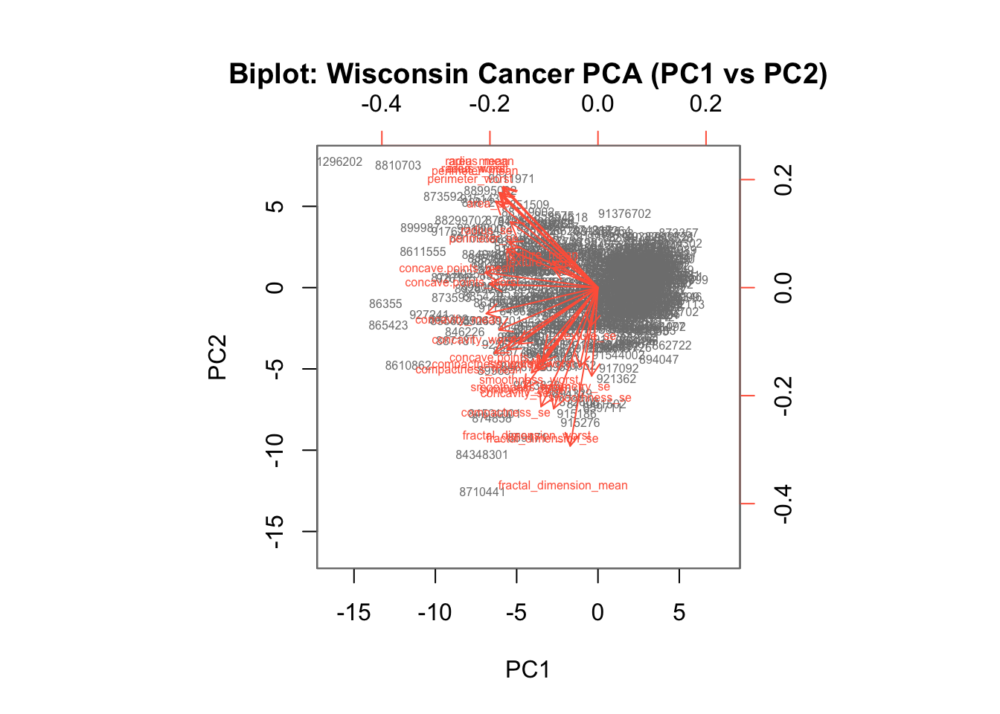
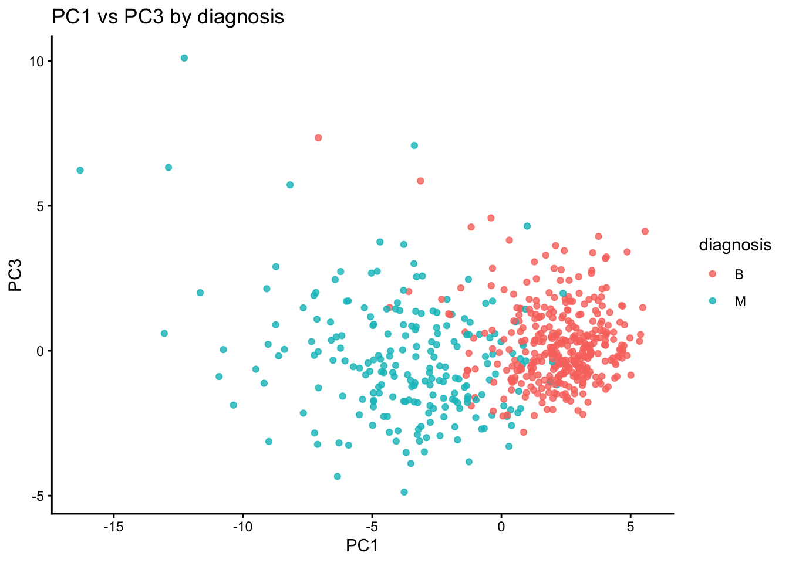

The goal of this mini-project is for you to explore a complete analysis using the unsupervised learning techniques covered in class. You’ll extend what you’ve learned by combining PCA as a preprocessing step to clustering using data that consist of measurements of cell nuclei of human breast masses. This expands on our RNA-Seq analysis from last day.
The data itself comes from the Wisconsin Breast Cancer Diagnostic Data Set first reported by K. P. Benne and O. L. Mangasarian: “Robust Linear Programming Discrimination of Two Linearly Inseparable Sets”.
Values in this data set describe characteristics of the cell nuclei present in digitized images of a fine needle aspiration (FNA) of a breast mass.
Data import
Data was downloaded from the class website as a CSV file.
The first column diagnosis is the expert opinion on the sample (i.e. patient FNA).
head(wisc.df$diagnosis)
[1] "M" "M" "M" "M" "M" "M"
Remove the diagnosis from data for subsequent analysis
#remove the first (diagnosis) columnwisc.data <- wisc.df[,-1] #[ ]: subsetting R objects, including data frames, vectors, and matrices. #,: [rows, columns]#-1: exclude the first column/rowdim(wisc.data)
[1] 569 30
#dim(): get the dimensions of the wisc.data object - returns a vector with two numbers: # of rows and # of columns
Store the diagnosis as a vector for use later when we compare our results to those from experts in the field.
diagnosis <-factor(wisc.df$diagnosis)
Q1.How many observations are in this dataset?
There are 569 observations/patients in the dataset
nrow(wisc.data)
[1] 569
Q2. How many of the observations have a malignant diagnosis?
table(wisc.df$diagnosis)
B M
357 212
#table(): output a table displaying the counts of each unique value present in the diagnosis column of your wisc.df data frame
Q3. How many variables/features in the data are suffixed with _mean?
#grep(): searches for matches to a specified pattern within each element of a character vector x.#length(): how many
Principal Component Analysis (PCA)
The prcomp() function to do PCA has a scale=FALSE default. In general we nearly always want to set this to TRUE so our analysis is not dominated by columns/variables in our dataset that have high standard deviation and mean when compared to others just because the units of measurement are on different scales/units.
scale: a logical value indicating whether the variables should be scaled to have unit variance before the analysis take place. center: a logical value (or a vector of values) that determines whether the variables in the dataset should have their mean subtracted, or “zero-centered,” before the principal component analysis (PCA) is performed.
Q4. From your results, what proportion of the original variance is captured by the first principal components (PC1)?
# variance proportions from the PCA objectprop_var <- (wisc.pr$sdev^2) /sum(wisc.pr$sdev^2)cum_var <-cumsum(prop_var)# Q4: proportion captured by PC1Q4_PC1 <- prop_var[1]round(Q4_PC1, 4)
[1] 0.4427
Q5. How many principal components (PCs) are required to describe at least 70% of the original variance in the data?
# Q5: # of PCs for at least 70% varianceQ5_n70 <-which(cum_var >=0.70)[1]Q5_n70
[1] 3
Q6. How many principal components (PCs) are required to describe at least 90% of the original variance in the data?
# Q6: # of PCs for at least 90% varianceQ6_n90 <-which(cum_var >=0.90)[1]Q6_n90
[1] 7
PCA Score Plot
Q7. What stands out to you about this plot? Is it easy or difficult to understand? Why?
# Basic biplot of the PCA you already computedbiplot(wisc.pr, scale =0, cex =0.5, col =c("grey50","tomato"),xlab ="PC1", ylab ="PC2",main ="Biplot: Wisconsin Cancer PCA (PC1 vs PC2)")

What stands out:
Hundreds of patient points stacked on top of each other near the center and stretched along PC1.
A dense “starburst” of red arrows (one for each feature) pointing roughly in similar directions for highly correlated features (e.g., many radius/area/perimeter/texture variants).
PC1 explains a big chunk of the variance, so separation is mostly left–right along PC1.
It’s difficult to understand:
Overplotting: ~500+ observations + ~30 variables means points and labels overlap; you can’t tell individuals apart.
Label clutter: Variable names printed on top of arrows become unreadable.
Mixed encodings: Scores and loadings share the same panel and axes, which asks you to interpret two different things at once (sample positions and variable directions).
Arbitrary sign: The direction of PCs (and thus arrow orientations) can flip without changing meaning, which can be confusing when comparing plots.
No class info: Diagnosis (M/B) isn’t shown by default, so you can’t judge class separation from this plot alone.
Q8. Generate a similar plot for principal components 1 and 3. What do you notice about these plots?
# Make a data frame of PC scores and add the labelsdf <-as.data.frame(wisc.pr$x)df$diagnosis <- diagnosis # factor# PC1 vs PC3library(ggplot2)ggplot(df, aes(PC1, PC3, color = diagnosis)) +geom_point(alpha =0.8) +labs(title ="PC1 vs PC3 by diagnosis",x ="PC1", y ="PC3") +theme_classic()

The main PC result figure is called a “score plot” or “PC plot” or “ordination plot”…
library(ggplot2)ggplot(wisc.pr$x) +aes(PC1, PC2, col = diagnosis) +geom_point()
# Variance explained by each principal component: pvepve <- pr.var /sum(pr.var)# Plot variance explained for each principal componentplot(pve, xlab ="Principal Component", ylab ="Proportion of Variance Explained", ylim =c(0, 1), type ="o")
# Alternative scree plot of the same data, note data driven y-axisbarplot(pve, ylab ="Precent of Variance Explained",names.arg=paste0("PC",1:length(pve)), las=2, axes =FALSE)axis(2, at=pve, labels=round(pve,2)*100 )
## ggplot based graph#install.packages("factoextra")library(factoextra)
Welcome! Want to learn more? See two factoextra-related books at https://goo.gl/ve3WBa
fviz_eig(wisc.pr, addlabels =TRUE)
Warning in geom_bar(stat = "identity", fill = barfill, color = barcolor, :
Ignoring empty aesthetic: `width`.
Communicating PCA results
Q9. For the first principal component, what is the component of the loading vector (i.e. wisc.pr$rotation[,1]) for the feature concave.points_mean?
wisc.pr$rotation["concave.points_mean", "PC1"]
[1] -0.2608538
Q10. What is the minimum number of principal components required to explain 80% of the variance of the data?
diagnosis
wisc.hclust.clusters B M
1 12 165
2 2 5
3 343 40
4 0 2
Combining methods (PCA and CLustering)
Clustering the origional data was not very productive. THe PCA results looked promising. Here we combine these methods by clustering from our PCA results. In other words “clustering in PC space”… > Q11. Using the plot() and abline() functions, what is the height at which the clustering model has 4 clusters?
## Take the first 3 PCsdist.pc <-dist(wisc.pr$x[, 1:3])wisc.pr.hclust <-hclust(dist.pc, method ="ward.D2")
View the tree…
plot(wisc.pr.hclust)abline(h =70, col="red")
To get our clustering membership vector (i.e. our main clustering result) we “cut” the tree at a desired height or to yield a desired number of “k groups.
grps <-cutree(wisc.pr.hclust, h =70)table(grps)
grps
1 2
203 366
How does this clustering grps compare to the expert diagnosis
table(grps, diagnosis)
diagnosis
grps B M
1 24 179
2 333 33
Sensitivity: TP/(TP+FN) Specificity: TN/(TN+FN)
7. Prediction
We can use our PCA model for prediction with new input patient samples.